### Brainhacks "Autonomy is key for enabling employees to connect with their work, make the job their own, and take ownership over innovation and problem solving." - Lindsay G. Oades et al. "Think what one thing can you do tomorrow to enable someone to make progress on meaningful work. Do it and then celebrate that progress. Make that a daily discipline." - Teresa Amabile // Name: Jukka Nikki, Identity: Programmer, Since: 6502 // Certified Scrum Master, Certified Scrum Product Owner
# [Agile Principles](https://agilemanifesto.org/principles.html)
<img alt="theory x and y" src="images/12-agile-principles.avif" width="80%">
#### [Agile Principles: Team reflection](https://agilemanifesto.org/principles.html) "At regular intervals, the team reflects on how to become more effective, then tunes and adjusts its behavior accordingly." team, effective, behavior
# [Team](https://en.wikipedia.org/wiki/Team)
#### [Katzenbach & smith: teams and groups 1/2](https://hbr.org/2005/07/the-discipline-of-teams) 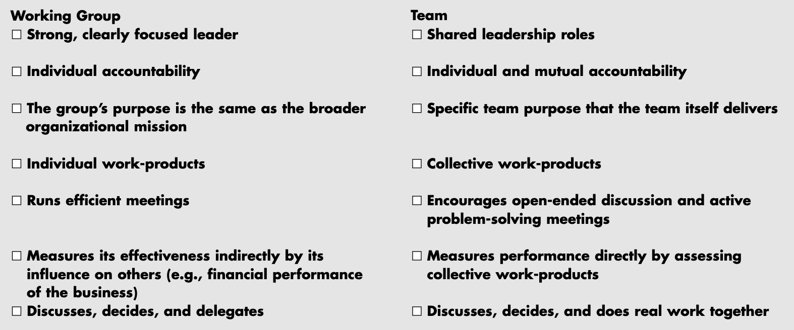 [A team is a small number of people with complementary skills who are committed to a common purpose, performance goals, and approach for which they hold themselves mutually accountable.](https://hbr.org/2005/07/the-discipline-of-teams)
#### [Groups and Teams are different](https://www.sciencedirect.com/science/article/abs/pii/S1541461216000823) 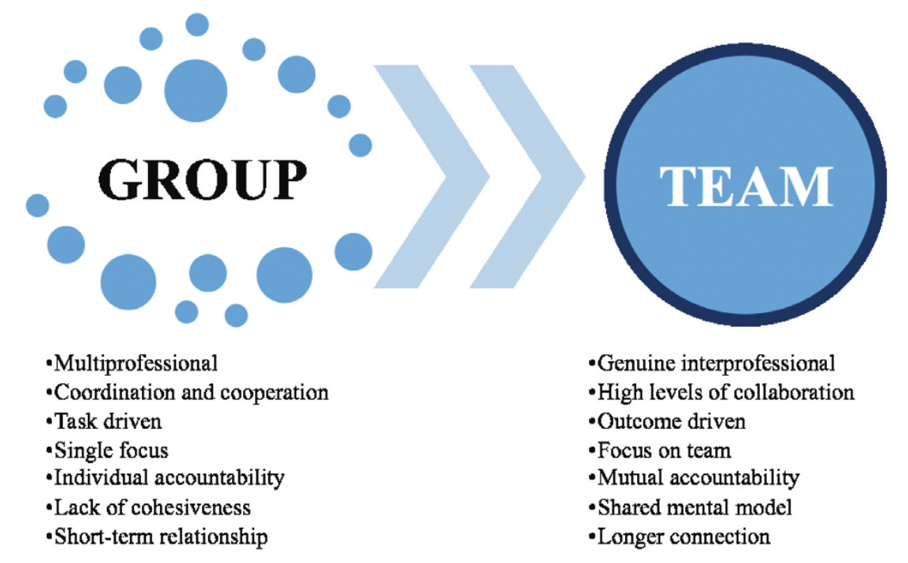 [Groups work with parallel interdependence, meaning they work independently with the assumption the work is coordinated by other providers. They do not include the relationship qualities or shared accountability.](https://www.sciencedirect.com/science/article/abs/pii/S1541461216000823)
#### [Katzenbach & smith: teams and groups 2/2](https://hbr.org/2005/07/the-discipline-of-teams) 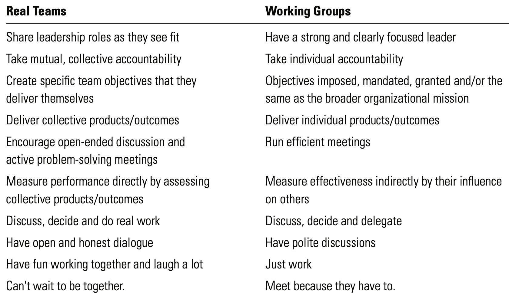
#### [When teams are needed](https://books.google.de/books/about/Managing_Learning_in_Organizations.html?id=Q_0JAQAAMAAJ) 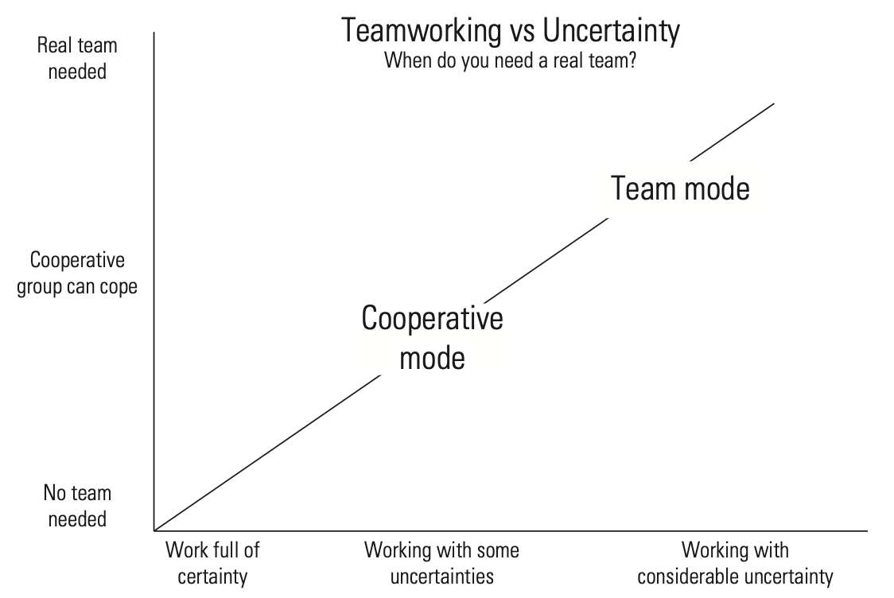 The more uncertainty related to the task, the more there is a need for a team approach.
# [Effective](https://en.wikipedia.org/wiki/Team)
#### [katzenback & smith: team effectiviness 1/3](https://teamleadsky.com/katzenbach-smith-model) 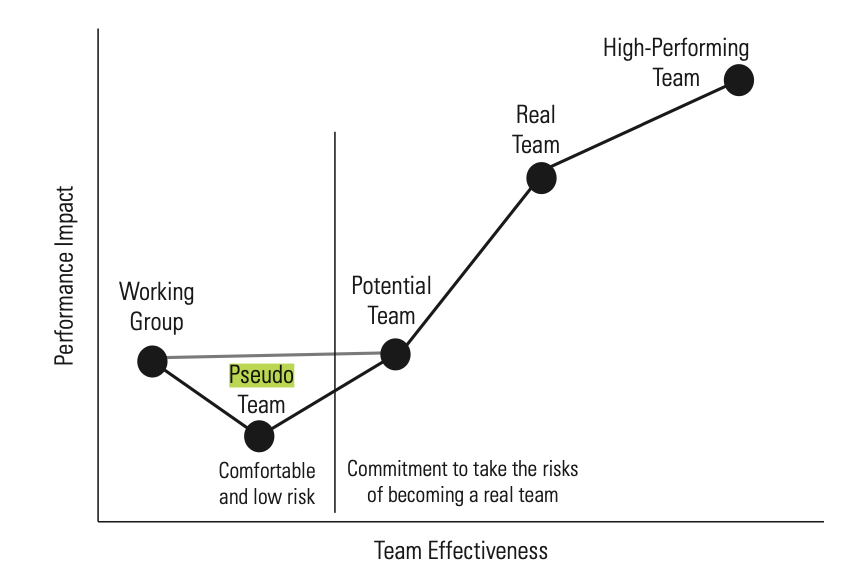 ‘In pseudo-teams, the sum of the whole is less than the potential of the individual parts’ - Katzenbach & Smith
#### [katzenback & smith: team effectiviness 2/3](https://teamleadsky.com/katzenbach-smith-model) The ***working group*** provides a comfortable and low-risk environment where there is no need for an individual to take responsibility beyond their assigned accountability for delivery of the assigned task. The ***pseudo team*** is the weakest of all the groups in terms of performance, often because the energy used in interacting with each other reduces the individual performance of group members without providing the desired joint team benefit.
#### [katzenback & smith: team effectiviness 3/3](https://teamleadsky.com/katzenbach-smith-model) ***Potential team*** needs often more clarity about its purpose and goals and more discipline in establishing a common approach. Has not yet achieved collective accountability. ***Real teams*** members have complementary skills. Individuals have same level of commitment to a common purpose. A ***high-performing team*** is a ‘real’ team that ‘has members who are also deeply committed to each other’s personal growth and success’
# [Behaviour](https://en.wikipedia.org/wiki/Team)
#### [Hackman: WHY TEAMS DON’T WORK 1/2](https://hbr.org/2009/05/why-teams-dont-work) even the best leader on the planet can’t make a team do well. All anyone can do is increase the likelihood that a team will be great by putting into place five conditions. 1. teams must be real. 2. teams need a compelling direction. 3. teams need enabling structures. 4. teams need a supportive organization. 5. teams need expert coaching.
#### [Hackman: WHY TEAMS DON’T WORK 2/2](https://hbr.org/2009/05/why-teams-dont-work) There are many cases where collaboration, particularly in truly creative endeavors, is a hindrance rather than a help (groupthinking,..). The challenge for a leader is to find a balance between individual autonomy and collective action. Either extreme is bad, though we are generally more aware of the downside of individualism in organizations.
#### [Agile Principles: Motivated team](https://agilemanifesto.org/principles.html) "Build projects around motivated individuals. Give them the environment and support they need, and trust them to get the job done." motivated, individuals, environment, support, trust ..
# [Motivated](https://en.wikipedia.org/wiki/Motivation)
#### [Herzberg: Two-Factor Theory 1/3](https://en.wikipedia.org/wiki/Two-factor_theory) ***Motivators*** are factors that increase our motivation, such as challenge, accomplishment, or growth. ***Hygiene factors*** cannot increase our motivation, but must be present to prevent decreasing our motivation. Factors that don't motivate us include pay, benefits, and job status — they can only dissatisfy us.
#### [Herzberg: Hygiene factors 2/3](https://www.gallup.com/workplace/471830/germany-engagement-index-report.aspx) 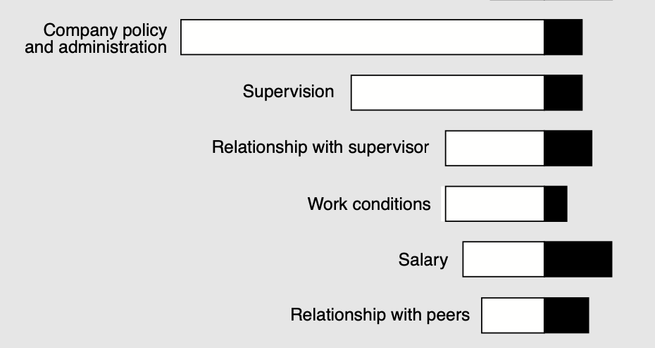 Ask workers what makes them unhappy at work, and you’ll hear about an annoying boss, a low salary, an uncomfortable work space, or stupid rules. [Managed badly, environmental factors make people miserable, and they can certainly be de-motivating.](https://www.leadingsapiens.com/herzberg-hygiene-motivation-theory/)
#### [Herzberg: motivation factors 3/3](https://www.gallup.com/workplace/471830/germany-engagement-index-report.aspx) 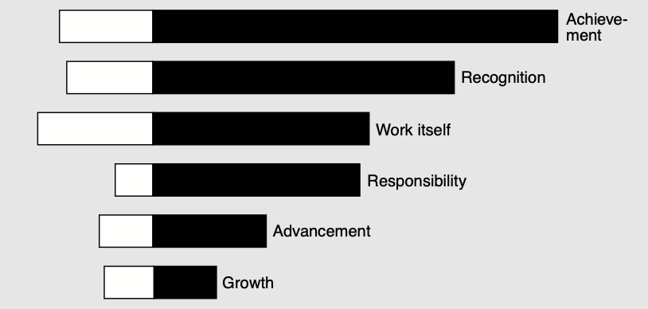 But even if managed brilliantly, they don’t motivate anybody to work much harder or smarter. [People are motivated, instead, by interesting work, challenge, and increased responsibility. These intrinsic factors answer people’s deep-seated need for growth and achievement.](https://www.leadingsapiens.com/herzberg-hygiene-motivation-theory/)
# [Individuals](https://en.wikipedia.org/wiki/Work_engagement)
#### [Gallup: Meanwhile in Germany 1/2 (2022)](https://www.gallup.com/workplace/471830/germany-engagement-index-report.aspx) 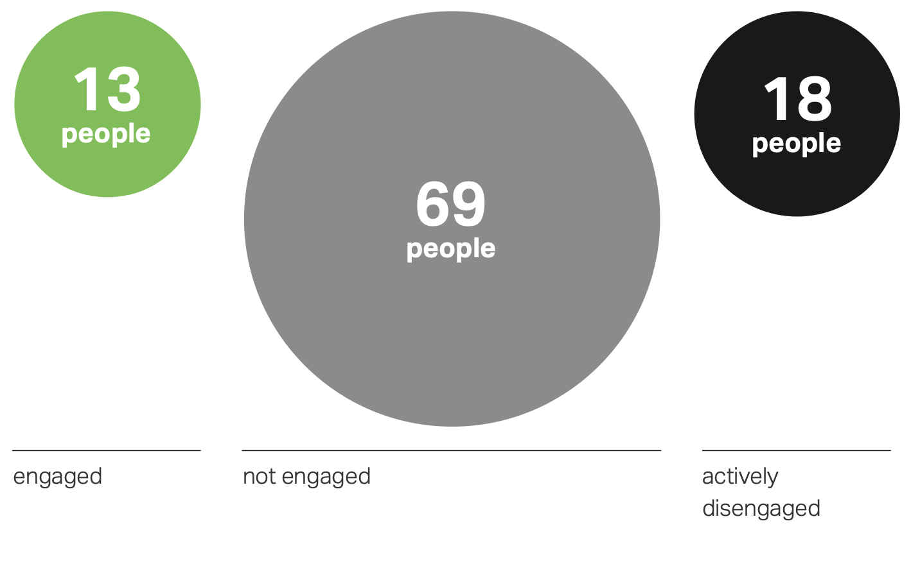 in average company of 100 employees: - 13% experience an engaging work environment - 69% do the minimum required - 13% are actively disengaged (may harm company)
#### [Gallup: Meanwhile in Germany 2/2 (2022)](https://www.gallup.com/workplace/471830/germany-engagement-index-report.aspx) many managers focus on their employees’ weaknesses rather than on their strengths and positive attributes. - 25% are extremely satisfied with direct manager - 30% say manager is always available and has time - 14% say manager inspires them to try new managers have potential to lead employees in a way that enables them to do their jobs better and with greater motivation
#### [Gallup: Engagement: positive outcomes](https://www.gallup.com/workplace/355082/employee-engagement-strategy-paper.aspx?utm_source=report&utm_medium=email&utm_campaign=ee_meta_analysis_full_report&utm_content=High_Development_Text_Link_2&elqTrackId=575ba1f247ba4cacac0b367edb8e7bfe&elq=7042246384414745a09398a329856681) 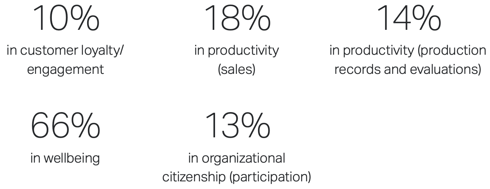 business units and teams in the top quartile of employee engagement achieved higher performance on positive outcomes (customer loyalty, sales, productivity, profitability, wellbeing and organizational citizenship)
#### [Gallup: Engagement: negative outcomes](https://www.gallup.com/workplace/355082/employee-engagement-strategy-paper.aspx?utm_source=report&utm_medium=email&utm_campaign=ee_meta_analysis_full_report&utm_content=High_Development_Text_Link_2&elqTrackId=575ba1f247ba4cacac0b367edb8e7bfe&elq=7042246384414745a09398a329856681) 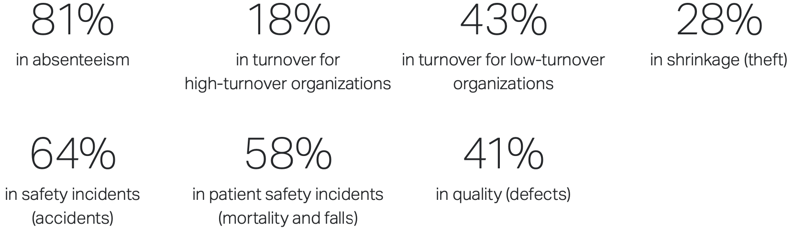 .. and realized fewer negative outcomes (absenteeism, turnover, shrinkage, safety incidents and quality defects) than those in the bottom quartile
# [Environment](https://en.wikipedia.org/wiki/Organizational_culture)
#### [McGregor: theory x and y 1/2](https://en.wikipedia.org/wiki/Theory_X_and_Theory_Y) 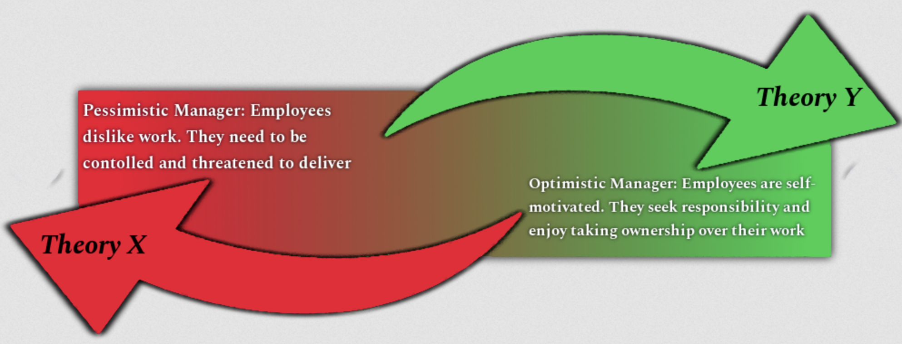 X: heightened supervision, external rewards, penalties. Y: motivating role of job satisfaction, encourages workers to approach tasks without direct supervision.
#### [McGregor: theory x and y 2/2](https://en.wikipedia.org/wiki/Theory_X_and_Theory_Y) Extrinsic rewards associated with Theory X management tend to motivate the specific behaviors that are being rewarded or punished. Intrinsic rewards associated with Theory Y — such as engaging and fulfilling work — tend to broaden thinking and decision-making. Intrinsic rewards are more common in knowledge jobs, in which employees are expected to use some amount of discretionary judgment
#### [theory x and agile](https://medium.com/@giullianagoianaviana/theories-x-and-y-and-agile-failure-in-organizations-2a29c7b32eda) Agile methodologies are built on the pillars of self-organization, self-reflection, and self-adjustment. They are based on creating an environment in which people can agree and commit to the organizational goals, and they are given trust to make their own decisions about how they organize the work. These frameworks cannot fit in an organizational environment in which Theory X beliefs are predominant.
"Why is it that we often design organizations as if people naturally shirk responsibility, do only what is required, resist learning, and can’t be trusted to do the right thing?" — Abraham Maslow
#### [Gallup: German job market (2023)](https://www.gallup.com/workplace/355082/employee-engagement-strategy-paper.aspx?utm_source=report&utm_medium=email&utm_campaign=ee_meta_analysis_full_report&utm_content=High_Development_Text_Link_2&elqTrackId=575ba1f247ba4cacac0b367edb8e7bfe&elq=7042246384414745a09398a329856681) business success depends on whether companies can retain their employees over the long term. - recruitment costs and time are increasing - around 13 million people – nearly a third of the German workforce – will retire by 2036 - although an increase in salary is often the key deciding factor for changing jobs, more money is not sufficient to make employees stay if other circumstances, such as organisational culture, are inadequate.
“It doesn't make sense to hire smart people and then tell them what to do. We hire smart people so they can tell us what to do.” ― Steve Jobs
# [Support](https://en.wikipedia.org/wiki/Work_engagement)
#### Gallup: Workplace wellbeing 1/2 Employees who strongly agree employer cares about their overall wellbeing vs. those who don’t - 3x more likely to be engaged at work - 69% less likely to actively search for a new job - 71% less likely to report experiencing a lot of burnout - 5x more likely to strongly advocate for their company as a place to work - 5x more likely to strongly agree that they trust the leadership of their organization - 36% more likely to be thriving in their overall lives
#### Gallup: Workplace wellbeing 2/2 The best-run organizations build cultures where employees feel leadership genuinely cares them. - build trust in leadership by making decisions that reflect the organization’s values - embrace flexible work environments while developing plans for the future - take employee wellbeing (mental health) seriously - use transparent and creative multichannel communication with employees and customers - upskill managers to coach through times of change
#### [Deloitte: engagement drivers](https://www2.deloitte.com/us/en/insights/deloitte-review/issue-16/employee-engagement-strategies.html) 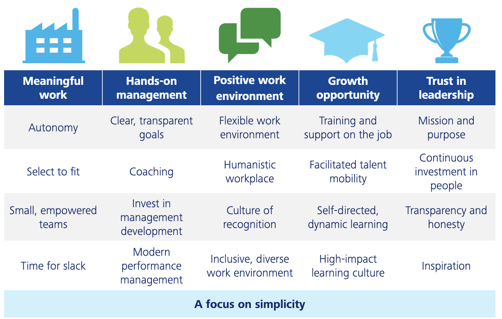 five major elements and 20 underlying strategies make organizations “irresistible.”
# [Trust](https://en.wikipedia.org/wiki/Trust_(social_science))
#### [Edmondson: Psychological safety 1/3](https://en.wikipedia.org/wiki/Psychological_safety) <img alt="4 Stages of Psychological Safety" src="images/Stages_of_Psychological_Safety.png" width="40%"> "a condition in which human beings feel (1) included, (2) safe to learn, (3) safe to contribute, and (4) safe to challenge the status quo"
#### [Edmondson: Psychological safety 2/3](https://www.oxford-group.com/wp-content/uploads/2022/05/Unlock20innovation20with20psychological20safety_Webv2_FINAL201.pdf) 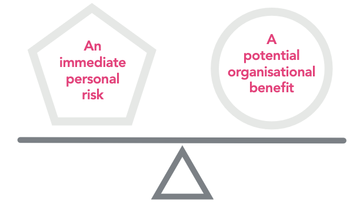 “Leadership at its core is about harnessing others' efforts to achieve something no one can achieve alone.”
#### [Edmondson: Psychological safety 3/3](https://www.oxford-group.com/wp-content/uploads/2022/05/Unlock20innovation20with20psychological20safety_Webv2_FINAL201.pdf) 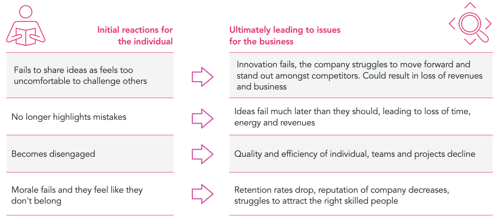 “High standards in a context where there is uncertainty or interdependence (or both) combined with a lack of psychological safety comprise a recipe for suboptimal performance.”
#### [Google: Project Aristotle](https://www.thinkwithgoogle.com/intl/en-emea/consumer-insights/consumer-trends/five-dynamics-effective-team/) [what sets apart our most effective teams](https://www.nytimes.com/2016/02/28/magazine/what-google-learned-from-its-quest-to-build-the-perfect-team.html) - [Who is on a team matters much less than how team members interact, structure their work, and view their contributions.](https://www.inc.com/larry-kim/the-results-of-googles-team-effectiveness-research-will-make-you-rethink-how-you-build-teams.html) - [best teams created a climate of openness where team members admit to their errors and discuss them more often.](https://www.thinkwithgoogle.com/intl/en-emea/consumer-insights/consumer-trends/five-dynamics-effective-team/)
#### [Agile Principles: Sustainable pace](https://agilemanifesto.org/principles.html) "Agile processes promote sustainable development. The sponsors, developers, and users should be able to maintain a constant pace indefinitely." sustainable, pace, indefinitely
# [Sustainable](https://en.wikipedia.org/wiki/Trust_(social_science))
#### [Bendix, 1956](https://queue.acm.org/detail.cfm?id=3595878) To be effective, authority depends on the assumption that subordinates will follow instructions in terms of the spirit rather than the letter of the rules. Two things are implied here: that the subordinate will adopt the behavior alternatives selected for him, and that he will give his “good will” to carrying out his orders. As this formulation suggests, “good will” involves judgment and initiative. . .[which can be] withheld by a “withdrawal of efficiency”. . . a slavish clinging to the letter of the rules…
#### [Quiet Quitting / Work-to-rule](https://queue.acm.org/detail.cfm?id=3595878) People seem to be tired of being driven to work harder and harder by companies and their immediate bosses if they conclude that neither the company nor the boss cares about them. In response, quiet quitters appear to be doing the least they can “get away with” in exchange for their pay. “Work-to-rule,” of which quiet quitting is a special case, means doing what is specified in one’s job description, no more, no less
#### [Akerlof & Kranton, Identity Economics 1/3](https://queue.acm.org/detail.cfm?id=3595878) “insider” Labor - committed to the norms and goals of the Firm - supplies “high” effort - sees itself as “building a cathedral” “outsider” Labor - “rational” agent of orthodox economics - supplies “low” effort. - laying bricks in exchange for a paycheck.
#### [Akerlof & Kranton, Identity Economics 2/3](https://queue.acm.org/detail.cfm?id=3595878) Insider Labor conforms to a different set of norms than outsider Labor. It is no longer doing what one does just because the boss says so. It is about doing what one does because one believes it is the right thing to do, according to the norms of the entity with which one has chosen to identify. Insiders would not look “good” or could even look “bad” to themselves if they did otherwise.
#### [Akerlof & Kranton, Identity Economics 3/3](https://queue.acm.org/detail.cfm?id=3595878) .. attempt to secure Labor’s commitment to the “cathedral” it is building. It may still be laying bricks, but as long as it “cares” about the cathedral, the total utility it derives from its efforts exceeds the income utility it would derive from its pay if pay were its only incentive. Its commitment to the cathedral implies it is likely to do more than it might otherwise “get away with.” (..) once Labor is committed to its “cathedral” (..) it would look bad to itself if it failed to do the “right things”.
#### [Solution to quiet quitting](https://queue.acm.org/detail.cfm?id=3595878) The solution is not just to make employees “feel” appreciated. That can easily devolve into shallow and readily detected attempts at manipulation, which can be ineffective and might even backfire. It is to actually appreciate them, to treat them like rational adults, to teach them, and when they have been sufficiently taught, to engage them in a bilateral conversation about how they should go about their work, framed in the context of a compelling, higher purpose. That means they have the right to speak with the correlative obligation of the boss to listen.
“Good bosses have some universal traits: they coach and teach and offer insight into the strategy of the firm and the worker’s career goals in light of that strategy” - Katherine Shaw
#### [Herzberg, one more time](https://www.leadingsapiens.com/herzberg-hygiene-motivation-theory/) idleness, indifference and irresponsibility are healthy responses to absurd work. If you want people motivated to do a good job, give them a good job to do.
# [Pace](https://en.wikipedia.org/wiki/Trust_(social_science))
#### [Amabile: Progress Principle 1/4](https://queue.acm.org/detail.cfm?id=3595878) Our hunt for inner work life triggers led us to the progress principle. most common event triggering - a “best day” was any progress in the work by the individual or the team. - a “worst day” was a setback. what motivates people on a day-to-day basis is the sense that they are making progress.
#### [Amabile: Progress Principle 2/4](https://queue.acm.org/detail.cfm?id=3595878) inner work life triggers - Catalysts, actions that directly support work, including help from a person or group - Nourishers, events such as shows of respect and words of encouragement. - Inhibitors, actions that fail to support or actively hinder work - Toxins, discouraging or undermining events. Catalysts and inhibitors are directed at the project, nourishers and toxins are directed at the person.
#### Daily progress checklist 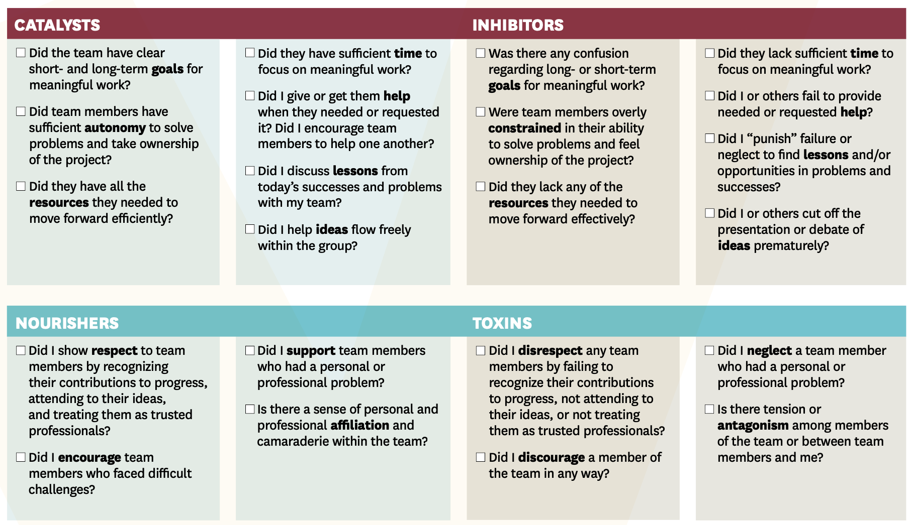
#### [Amabile: Progress Principle 3/4](https://queue.acm.org/detail.cfm?id=3595878) Even ordinary, incremental progress can increase people’s engagement in the work and their happiness during the workday. Small losses or setbacks can have an extremely negative effect on inner work life. Negative events can have a more powerful impact on inner work life than positive events. It is especially important for managers to minimize daily hassles.
#### [Amabile: Progress Principle 4/4](https://queue.acm.org/detail.cfm?id=3595878) Managers can help employees see how their work is contributing. Most important, they can avoid actions that negate its value. If managers fail to support progress and the people trying to make it, inner work life suffers and so does performance; and degraded performance further undermines inner work life.
#### [DevEx: Concept 1/4](https://queue.acm.org/detail.cfm?id=3595878) Developer experience - encompasses how developers feel about, think about, and value their work. - negatively affected by interruptions, unrealistic deadlines, and friction in development tools - improved by having clear tasks, well-organized code, and pain-free releases
#### [DevEx: Dimensions 2/4](https://queue.acm.org/detail.cfm?id=3595878) 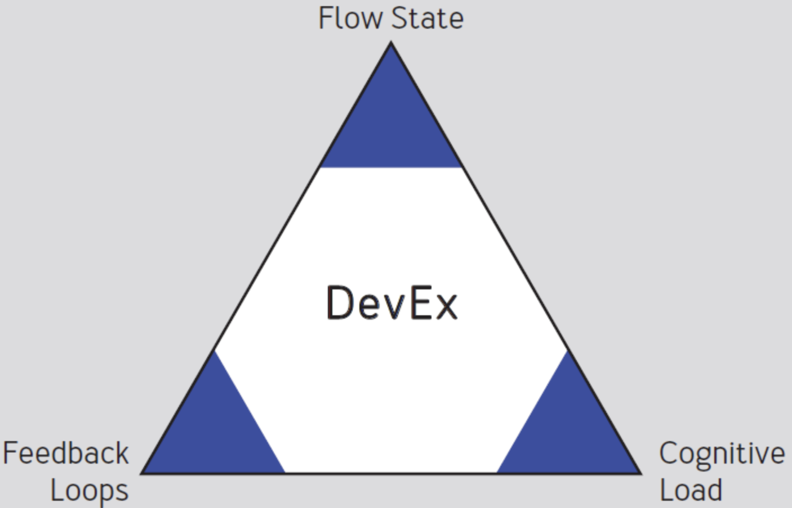 - Fast feedback loops => complete work quickly with minimal friction. - Cognitive load impedes developers' most important responsibility: delivering value to customers. - Frequent experiences of flow state => higher productivity, innovation, employee development.
#### [DevEx: Metrics 3/4](https://queue.acm.org/detail.cfm?id=3595878) 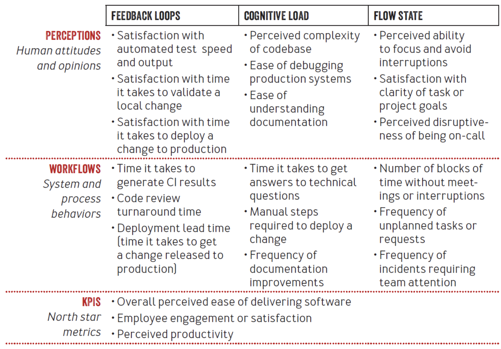
#### [DevEx: Github Formula 4/4](https://queue.acm.org/detail.cfm?id=3595878) 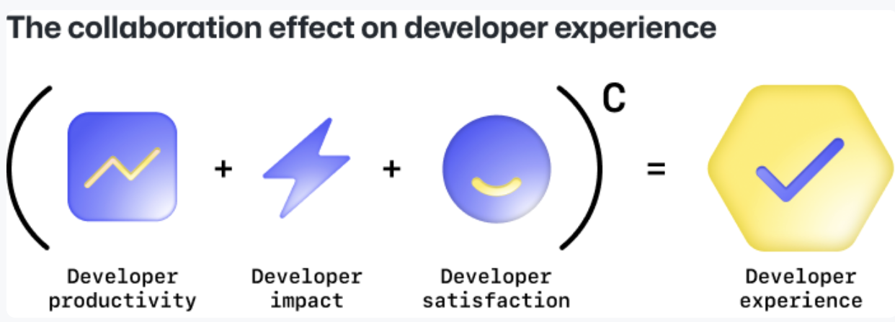 - Productivity: speed and ease of development - Impact: smoothness from idea to production - Satisfaction: how the environment, workflows, and tools affect developer happiness - Collaboration: multiplier across the entire DevEx.
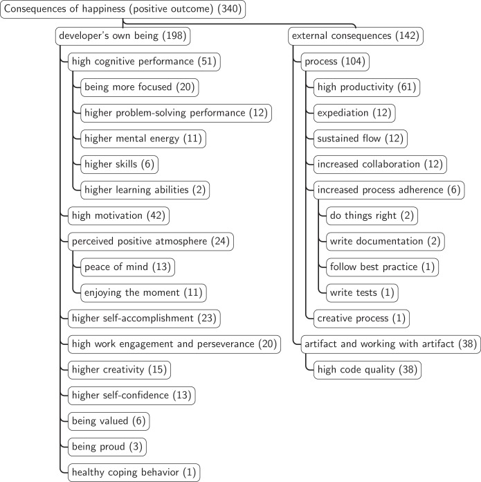
#### [Progress Principle & DevEx](https://queue.acm.org/detail.cfm?id=3595878) Because inner work life has such a potent effect on creativity and productivity, and because small but consistent steps forward, shared by many people, can accumulate into excellent execution, progress events that often go unnoticed are critical to the overall performance of organizations.
# [forever](https://en.wikipedia.org/wiki/Trust_(social_science))
#### George Gallup, 1958 While the standard retirement age for men in the 1950s was closer to 65, men who lived to see 95 did not retire until they were 80 years old on average. Even more remarkable, 93% of these men reported getting a great deal of satisfaction out of the work they did, and 86% reported having fun doing their job.
# END
#### [workplace boredom](https://journals.sagepub.com/doi/pdf/10.1177/1059601115575148) 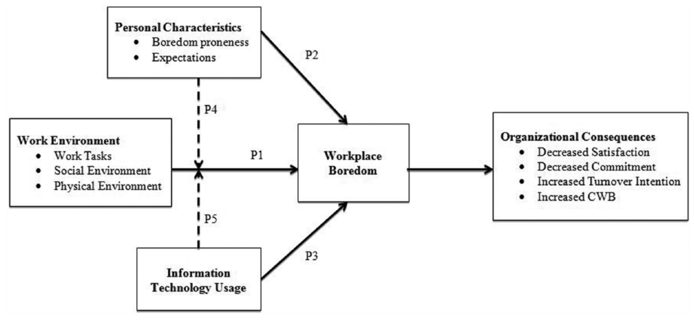 paradox: level of reported boredom is increasing, even while the job market appears to have fewer inherently boring jobs.
#### [SELF-DETERMINATION THEORY](https://selfdeterminationtheory.org/SDT/documents/2005_GagneDeci_JOB_SDTtheory.pdf) 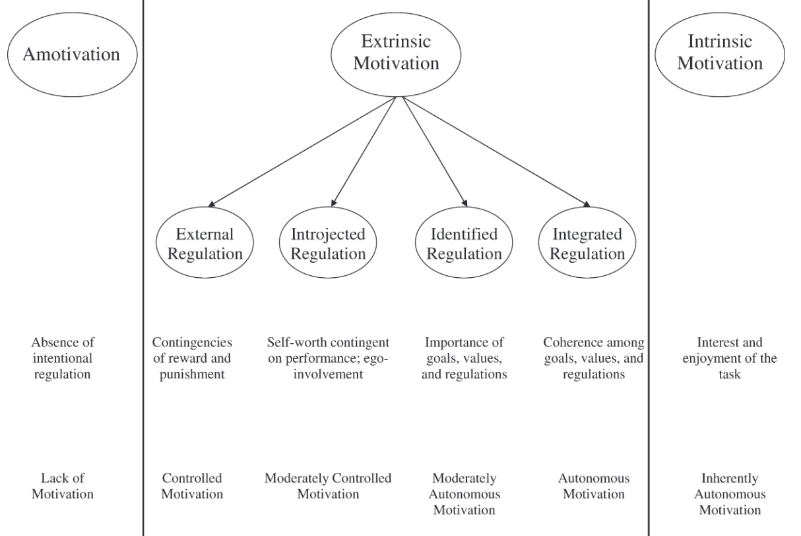 people need to feel competent and autonomous to maintain their intrinsic motivation
"An organization that treats its programmers as morons will soon have programmers that are willing and able to act like morons only." - Bjarne Stroustrup